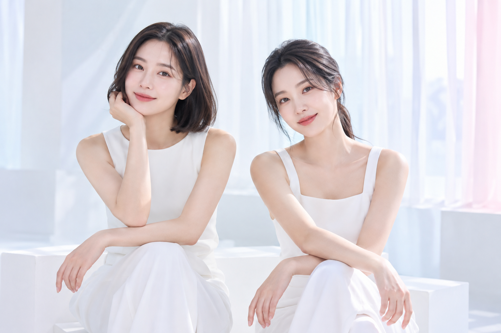

LUNE EVENT
루네의 뷰티 제안


LUNE SELECTION
관심 있는 곳부터,
나에게 맞는 방향으로.
코·눈·리프팅의 포인트를 살펴보세요.

LUNE CONSULTATION
원하는 변화부터,
차분하게.
고민하는 부위와 원하는 방향을 들려주세요.
진행 범위와 회복 일정을 함께 확인합니다.
- 고민과 방향
- 현재 고민과 원하는 변화를 이야기합니다.
- 진행 범위와 비용
- 적용 항목과 예상 비용을 확인합니다.
- 회복과 관리
- 주의 사항과 경과 확인 일정을 안내합니다.
CONSULTATION FLOW
상담의 흐름을 한눈에.
- 01
상담 예약
관심 항목과 고민하는 부위를 남겨주세요.
- 02
진료 상담
진행 범위와 예상 비용을 함께 확인합니다.
- 03
수술·시술
상담한 내용을 바탕으로 진행합니다.
- 04
경과 확인
회복 상태와 관리 방법을 안내합니다.
LUNE